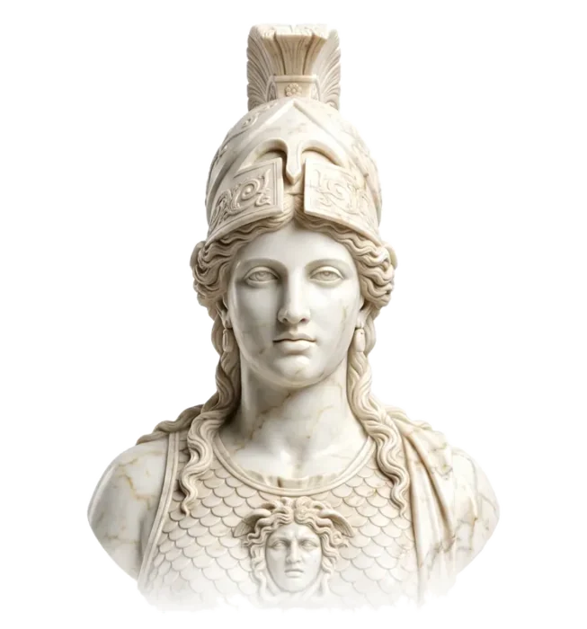
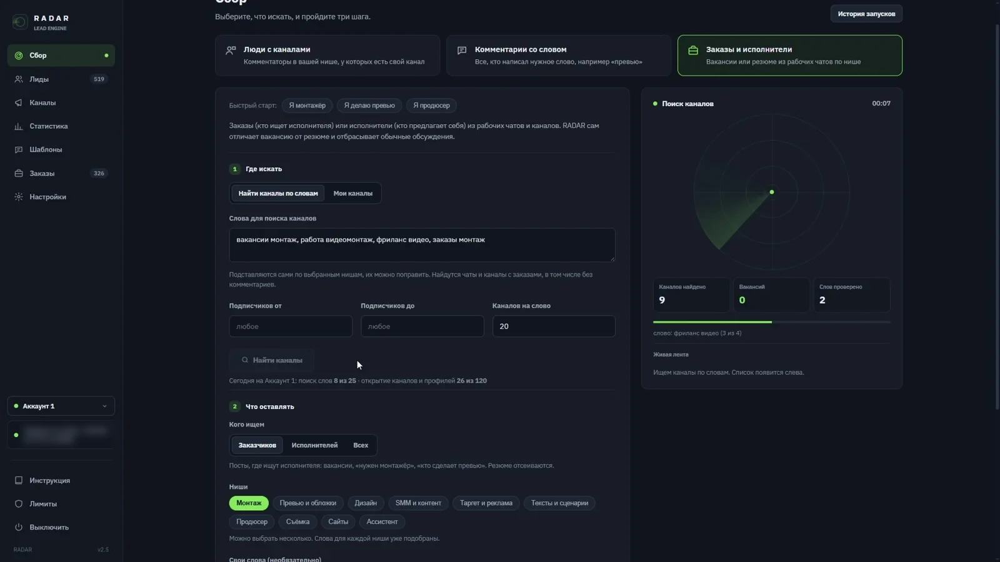

Движок поиска клиентов внутри вашего продукта
Вы учите монтажу, продюсированию, SMM или дизайну. RADAR под вашим брендом находит ученикам клиентов в Telegram, YouTube и Instagram — и они быстрее доходят до первых продаж.
«А где искать клиентов?» — вопрос из каждого потока
Ученик прошёл обучение и понял методику. Дальше он упирается в поиск, и результат курса зависит от того, найдёт ли он первого клиента.
Ученик понял методику, но не знает, кому писать.
Застревает на поиске и не доходит до первой продажи.
Уходит с ощущением, что обучение не сработало.
Нет кейсов — следующий поток продаётся тяжелее.
Методика ни при чём. Не хватает одного звена: найти людей, которым это нужно.
RADAR как движок вашего продукта
Подключите RADAR в айдентике вашего бренда, и у учеников будет не только знание, но и инструмент, который находит им клиентов.
УТП, которого нет у конкурентов
Все учат продавать. Вы ещё и даёте программу, которая находит клиентов. Ученику проще выбрать вас.
Больше кейсов учеников
Ученики не застревают на поиске и быстрее доходят до первых продаж. Их результаты становятся вашим социальным доказательством.
Под вашим брендом
Название, цвета, фон, готовые ниши и шаблоны сообщений настраиваются под ваш продукт и вашу методику.
Больше не нужно объяснять, где искать
Вместо разборов бирж, чатов и рассылок в каждом потоке ученики открывают программу и собирают базу сами.
На рынке мы не нашли продукта, который сочетает поиск клиентов в трёх соцсетях, CRM и брендирование под эксперта.
Что получает ваш ученик
- Три соцсети в одной программе. Telegram, YouTube и Instagram.
- Живые люди с поводом написать. Только активные каналы и аккаунты, видно, чем человек занят.
- Встроенная CRM. Статусы от первого сообщения до сделки, шаблоны, статистика ответов.
- Быстрый старт под вашу нишу. Сценарии под аудиторию: один клик, и поиск настроен.
Java-ментор
тёплыйУченики получают программу под вашим брендом и ежемесячный созвон с нашей командой. Вопросы по программе приходят к нам, а не к вам.

Дар Гермеса
Программа поиска клиентов для монтажёров, собранная на движке RADAR под бренд эксперта. Свои название, цвета, фон, тексты интерфейса. Внутри тот же движок.
Отвечает, кому и как продавать
Закрытое сообщество для монтажёров: как продавать уверенно, как работать с рынком, как поднять чек.
Сразу находит клиентов
Продукт стал цельным: от знаний о продажах до программы, которая находит, кому продавать. Ученик открывает «Дар», собирает клиентов в Telegram, YouTube и Instagram и сразу применяет то, чему научился в «Саду».
Один движок, два бренда
Потяните ползунок: слева «Дар Гермеса», справа RADAR.

Дар ГермесаRADAR«Дар Гермеса» продаётся отдельно и ведёт учеников дальше по продуктовой линейке эксперта. Как он упакован на сайте эксперта →
Два способа подключить RADAR
Встроить в обучение
RADAR входит в ваш курс или сообщество под вашим брендом. Ученики получают его вместе с обучением.
Свой продукт на движке RADAR
Отдельный инструмент под вашим названием, который вы продаёте своей аудитории: отдельно, в связке с обучением, как апсейл или по подписке.
Так работает «Дар Гермеса»Команда RADAR заходит вместе с программой
- Ежемесячная поддержка программыОбновления, исправления и ответы на вопросы учеников по RADAR. Эти вопросы приходят к нам, а не к вам.
- Созвон с вашей аудиторией раз в месяцПоказываем, как работать с RADAR эффективнее, и разбираем ситуации учеников.
- Установка в один кликДля учеников на Windows и macOS.
Как проходит внедрение
От демо до запуска для учеников — до двух недель.
Демо
Показываем, как RADAR находит клиентов именно вашей аудитории.
Бриф
Бренд, ниши, тексты, сценарии под вашу методику.
Сборка
Собираем программу в вашей айдентике и с вашими сценариями.
Запуск для учеников
Установка в один клик на Windows и macOS.
Поддержка и обновления
Обновления, исправления и ежемесячный созвон с аудиторией.
Частые вопросы
Не заблокируют ли аккаунты учеников?
RADAR не делает массовых рассылок: сообщения ученик отправляет сам, как человек. Безопасный режим лимитов останавливает программу заранее, до паузы от Telegram. Советуем заводить для RADAR отдельный аккаунт.
Где хранятся данные?
На компьютере каждого ученика, без облака. Выгрузка в Excel и CSV, по желанию синхронизация с Google Таблицей.
На чём работает?
На Windows и macOS, установка в один клик.
Что с обновлениями?
Обновления и исправления входят в ежемесячную поддержку.
Кто отвечает на вопросы учеников?
Мы. Вопросы по программе приходят к команде RADAR, а не к вам. Раз в месяц проводим созвон с вашей аудиторией.
Для каких ниш подходит?
Лучше всего — для продуктов, чьи ученики продают услуги в контенте: монтаж, превью, продюсирование, SMM, дизайн.
Сколько стоит?
Зависит от формата и объёма брендирования. Точную сумму назовём после демо.
Можно сначала посмотреть?
Да. На демо покажем, как RADAR находит клиентов именно вашей аудитории. Напишите «ДВИЖОК» в личку.
Расскажите, чему вы учите. Покажем, как RADAR найдёт клиентов вашим ученикам
Вы фрилансер? RADAR для себя →